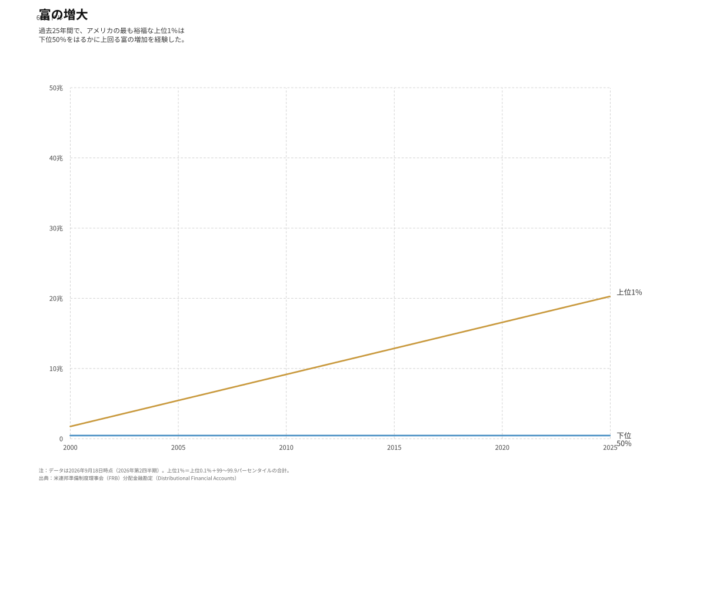

富の増大
過去25年間で、アメリカの最も裕福な上位1％は下位50％をはるかに上回る富の増加を経験した。
本版はNBC Newsのグラフ（データ更新日2025年3月23日）を日本語化し、最新データ（2026年第2四半期）まで拡張した再現版。

出典：米連邦準備制度理事会（FRB）分配金融勘定（Distributional Financial Accounts）
主なポイント
- 上位1％の純資産は2000年第1四半期の約11.7兆ドルから2026年第2四半期には約60兆ドルへ、約5.2倍に増加。
- 下位50％は同期間に約1.4兆ドルから約4.3兆ドルへ、約3.2倍にとどまる。
- 金融危機（2008〜09年）では下位50％の資産が約1.5兆ドル（2006年第2四半期）から約0.3兆ドル（2010年第4四半期）へ5分の1以下に激減する一方、上位1％はその後の資産膨張で大きく回復・拡大。
- 2020年以降の急拡大で、上位1％が全国の富のシェアはさらに集中（FRB推計で上位1％の富のシェアは約30％）。
データ（四半期）
出典はFRB「Distributional Financial Accounts」。上位1％は「上位0.1％」と「99〜99.9パーセンタイル」の合計。 単位は兆ドル（現在価値）。
| 四半期 | 上位1%（兆ドル） | 下位50%（兆ドル） |
|---|
全期間（1989年第3四半期〜）のデータ： CSV（日本語列名） / CSV（英語列名）